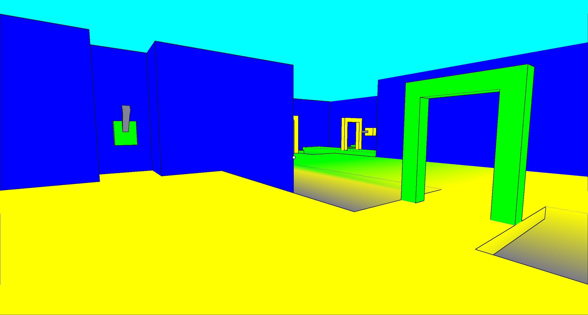
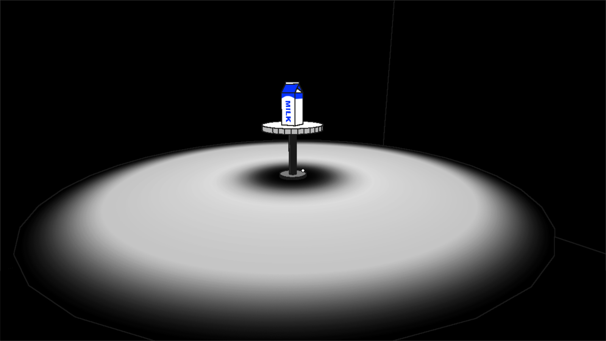

Andrew Knowles
Gameplay Systems Engineer
Gameplay Systems Engineer

Portal-based first-person puzzle game, using C++ and OpenGL.
Besides portal rendering/logic, I focused on level design and scripting, with some tool dev to support those processes.
Developed as my final project in
CMU's 15-466: Computer Game Programming course.
For our final project in Computer Game Programming, students suggested a large list of themes and mechanics which could serve as inspiration for making a game, and teams were created by grouping students who were interested in the same one. My team, consisting of myself and three others, chose to make a game involving "non-Euclidean geometry," eventually settling on portals as a core mechanic.
I've written a separate write-up describing the implementation of portals, so this page will focus on other aspects of the game's development.
"Help! I'm Trapped in the Psychedelic Time Dimension Again (Second Time This Week)" is a short first-person puzzle game with portal mechanics. Players are thrust into a high-contrast alternate world and must navigate through different rooms using portals, which can be activated or rotated using various switches and buttons around the levels, in order to obtain milk.
The game takes around 5 minutes to complete. The puzzles are mostly straightforward, intending to showcase a bunch of different possible interactions with portals. While the later rooms can be quite complicated, the game doesn't have any "fail" states, so walking around and interacting with things until you win is an effective strategy.
At CMU's Fall 2023 Game Creation Society Release Festival, our game won a few awards within our class, including best writing, graphics, gameplay, and overall quality.
The obnoxiously long title of the game was chosen as a joke, intended to set up the unseriousness of our game's narrative. The name of our development team, "Genious," was chosen because our professor was wearing a da share z0ne shirt on our last day to decide, and we had no other ideas.
When we initially started designing this project, we were inspired by visualizations of hyperbolic and spherical spaces, such as Hyperbolica. However, we decided such an endeavor wouldn't be preferred for this assignment:
With these reasons in mind, we pivoted to focus only on portals, which were much more approachable from a math and rendering perspective (although still involved when overlaps/recursion are at play) and were easier to design and build levels for.
When considering portal-related gameplay, our team identified two approaches: one is the test chamber-style used in Portal, where puzzles are clearly identified as such and the portal presence is obvious. The other was a more subtle use of portals, creating spaces that appeared normal but were actually non-Euclidean.
While we had tested the latter approach a bit in prototypes, we unfortunately didn't have time to finish designing a section to fit into our final game, so we ended up just having a bunch of test chambers.
As far as narrative goes, we had written some ideas about nihilism down but ended up simplifying quite a bit, making a silly, mundane goal of finding milk the main motivation for completing the game. I think the silliness adds to the game a lot, and just having a small objective makes it more interesting to walk forward through the levels.
Since we knew gameplay would consist of walking and clicking on things, we could avoid building a physics-based character controller by using a walkmesh system, which we had already used in an earlier project. We had to recalculate walkmesh-local coordinates after teleporting, but otherwise our portals worked fine.
The walkmesh also allowed players to walk on surfaces at different angles, so we threw in some ceiling and wall portals.
As far as interactions go, we had levers which could toggle a portal's activation, so we made rooms which required turning a portal on, and then a room which required turning a portal off to continue.
We also took advantage of our portals being two-sided, making players enter through one side and go around through the other.
When thinking about portal usage I hadn't seen before in games like Portal, I realized we could rotate and move around our portals without issue, so I included some buttons which could do that.
The last room is an ugly mess to demonstrate possible complexity of levels. It includes every mechanic, just for fun.
From earlier games in the class, we already had a comfortable pipeline for importing models from Blender into our engine, so we continued to use it to make levels for this game.
In those smaller games, most of the imported meshes remained static, and animation/functionality was handled by manually adding lines to find meshes by name on load so they could be transformed. For this game, though, we not only would be dealing with larger maps, we'd also have lots of functioning objects with extra data that would need to be hooked up- the portals themselves, for example, would be a real pain to manually connect in our scripts.
To address this issue, I made a small blender plugin that allowed us to mark specific meshes as different types of objects- portals, buttons, etc- and modified our export plugin and engine scene importer to add them as special objects with extra data included.
The plugin was about as basic as a level design tool could get, with just bools and string fields we could fill out as we modeled levels. Still, it was really helpful when it came to designing and testing since we could avoid extra scripting/compiling for iterations, and it was less confusing to work with than trying to manually attach portals in-engine.
When it came to designing the puzzles in the final game, we approached it by trying to showcase as many working mechanics as possible (the ones discussed above). I employed this level design technique for my first 3D game in the class, and I think it works well for small projects with a tech focus, though when it comes to making a solid gaming experience, I think other considerations are more important (how levels fit into the narrative, for example).
In line with our barebones level design approach, we took lots of shortcuts that wouldn't be ideal in a larger scale project. Text and UI elements were prerendered images- we had handled text rendering in a previous assignment, but integrating it into our final project was too low of a priority for how little text was needed.
We also had little audio besides clicking of switches and buttons. A short music loop plays in the first room of the game, and some wind ambience plays throughout our levels, but a real soundtrack wasn't able to be put together in time.
There was more tech included in the engine that isn't discussed here, like a timer system used for animating meshes or an ugly last-minute optimization to manually disable portals as we progress through rooms. If you'd like to look through the source code, you can find most of that stuff in PlayMode.cpp.
Despite enforced early deadlines, almost all of our game's content was made in the last week or so as we mostly discarded our prototype level designs, which is not ideal. The slow development of the portal renderer didn't help, but I still think we should have done a better job at planning levels on paper once we knew we were working with portals, even if we needed to wait for modeling/scripting to happen when the engine was ready.
As mentioned, our scope for this game changed quite a bit throughout development. I think we ended up meeting our minimum goals of having a portal-based game with somewhat varied puzzles and a silly but decent enough narrative (not just a graphics demo!), though I wish we were able to make the game a bit more well-rounded in some areas.
In particular, the "subtle portal" sections would have been nice, and I think playing into the milk story more (leaving empty jugs and puddles around) would make a stronger impression while making environments more visually interesting. Also, more challeging levels (fail states) and an actual soundtrack would be nice.
